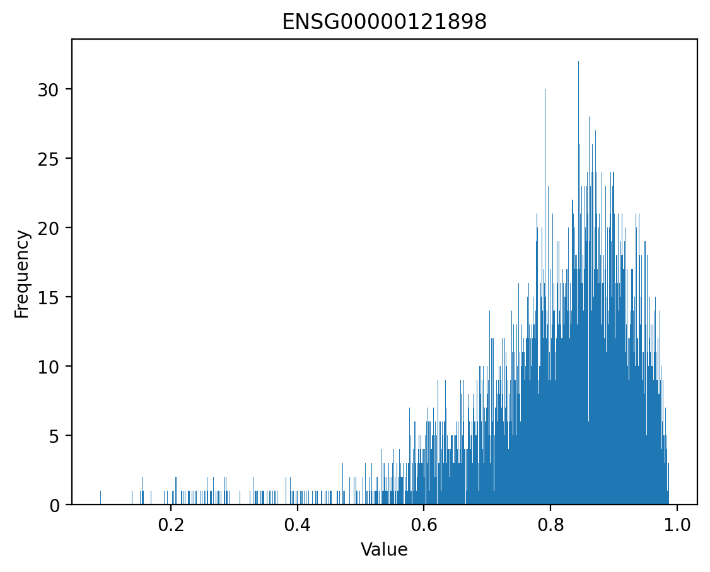
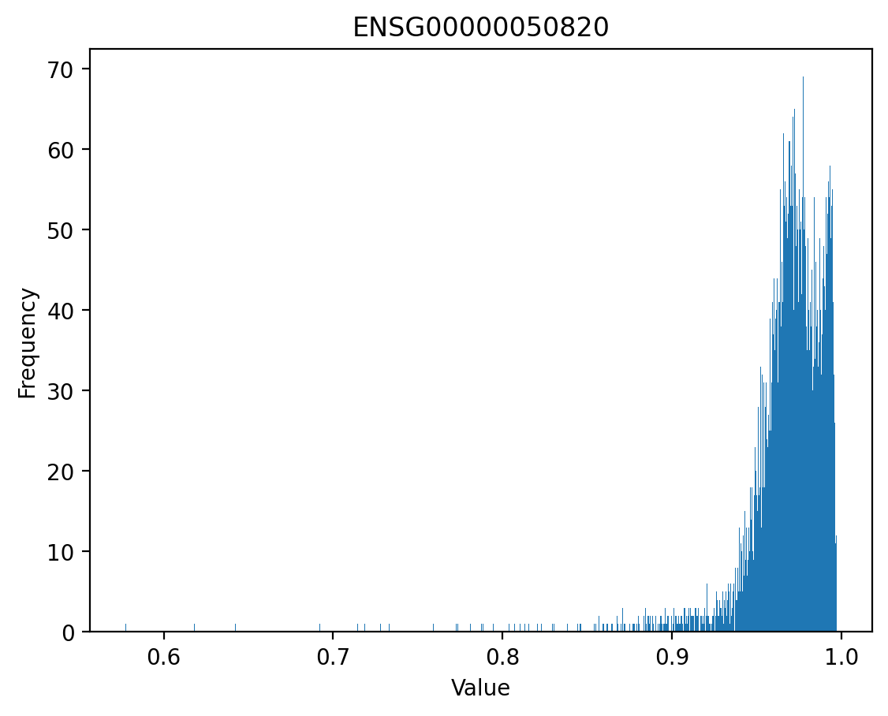

import tensorflow as tf
# Make sure the GPU is enabled
assert tf.config.list_physical_devices('GPU'), 'Start the colab kernel with GPU: Runtime -> Change runtime type -> GPU'
import tensorflow_hub as hub
import joblib
import gzip
import kipoiseq
from kipoiseq import Interval
import pyfaidx
import pandas as pd
import numpy as np
import matplotlib.pyplot as plt
import matplotlib as mpl
import seaborn as sns
%matplotlib inline
%config InlineBackend.figure_format = 'retina'
transform_path = 'gs://dm-enformer/models/enformer.finetuned.SAD.robustscaler-PCA500-robustscaler.transform.pkl'
model_path = 'https://tfhub.dev/deepmind/enformer/1'
fasta_file = '/lus/grand/projects/TFXcan/imlab/data/hg_sequences/hg38/Homo_sapiens_assembly38.fasta'We are trying to debug low correlation values between predicted reference CAGE values and reference observed gene expression by inspecting a few genes.
Select Genes
annot_df = pd.read_csv("/home/s1mi/enformer_rat_data/annotation/hg38.protein_coding_TSS.txt", sep="\t")
genes = annot_df.sample(n=10)
print(genes) ensembl_gene_id external_gene_name chromosome_name \
2199 ENSG00000121898 CPXM2 10
1804 ENSG00000162613 FUBP1 1
15362 ENSG00000164327 RICTOR 5
5786 ENSG00000087303 NID2 14
4613 ENSG00000139233 LLPH 12
6638 ENSG00000050820 BCAR1 16
2681 ENSG00000171160 MORN4 10
9526 ENSG00000181781 ODF3L2 19
4709 ENSG00000123064 DDX54 12
10435 ENSG00000135632 SMYD5 2
transcription_start_site
2199 123891807
1804 77979072
15362 39074399
5786 52069059
4613 66130750
6638 75251624
2681 97633500
9526 474983
4709 113185478
10435 73214245 Run Enformer at the TSS
Code
SEQUENCE_LENGTH = 393216
class Enformer:
def __init__(self, tfhub_url):
self._model = hub.load(tfhub_url).model
def predict_on_batch(self, inputs):
predictions = self._model.predict_on_batch(inputs)
return {k: v.numpy() for k, v in predictions.items()}
@tf.function
def contribution_input_grad(self, input_sequence,
target_mask, output_head='human'):
input_sequence = input_sequence[tf.newaxis]
target_mask_mass = tf.reduce_sum(target_mask)
with tf.GradientTape() as tape:
tape.watch(input_sequence)
prediction = tf.reduce_sum(
target_mask[tf.newaxis] *
self._model.predict_on_batch(input_sequence)[output_head]) / target_mask_mass
input_grad = tape.gradient(prediction, input_sequence) * input_sequence
input_grad = tf.squeeze(input_grad, axis=0)
return tf.reduce_sum(input_grad, axis=-1)
def plot_tracks(tracks, interval, height=1.5):
fig, axes = plt.subplots(len(tracks), 1, figsize=(20, height * len(tracks)), sharex=True)
for ax, (title, y) in zip(axes, tracks.items()):
ax.fill_between(np.linspace(interval.start, interval.end, num=len(y)), y)
ax.set_title(title)
sns.despine(top=True, right=True, bottom=True)
ax.set_xlabel(str(interval))
plt.tight_layout()
class FastaStringExtractor:
def __init__(self, fasta_file):
self.fasta = pyfaidx.Fasta(fasta_file)
self._chromosome_sizes = {k: len(v) for k, v in self.fasta.items()}
def extract(self, interval: Interval, **kwargs) -> str:
# Truncate interval if it extends beyond the chromosome lengths.
chromosome_length = self._chromosome_sizes[interval.chrom]
trimmed_interval = Interval(interval.chrom,
max(interval.start, 0),
min(interval.end, chromosome_length),
)
# pyfaidx wants a 1-based interval
sequence = str(self.fasta.get_seq(trimmed_interval.chrom,
trimmed_interval.start + 1,
trimmed_interval.stop).seq).upper()
# Fill truncated values with N's.
pad_upstream = 'N' * max(-interval.start, 0)
pad_downstream = 'N' * max(interval.end - chromosome_length, 0)
return pad_upstream + sequence + pad_downstream
def close(self):
return self.fasta.close()
def one_hot_encode(sequence):
return kipoiseq.transforms.functional.one_hot_dna(sequence).astype(np.float32)model = Enformer(model_path)
fasta_extractor = FastaStringExtractor(fasta_file)## Create Interval object for each TSS
intervals = [kipoiseq.Interval('chr'+ row['chromosome_name'], row['transcription_start_site'], row['transcription_start_site'])
for _, row in genes.iterrows()]tss_predictions = {}
for index, gene in enumerate(genes['ensembl_gene_id']):
tss = intervals[index]
sequence_one_hot = one_hot_encode(fasta_extractor.extract(tss.resize(SEQUENCE_LENGTH)))
tss_predictions[gene] = model.predict_on_batch(sequence_one_hot[np.newaxis])['human'][0]Query Predicted Reference Epigenome at the TSS
Code
import h5py
enfref_dir = "/grand/TFXcan/imlab/users/lvairus/reftile_project/enformer-reference-epigenome"
def query_epigenome(chr_num, center_bp, num_bins=3, tracks=-1):
"""
Parameters:
path_to_enfref (str): path to the directory containing the concatenated reference enformer files
chr_num (int/string): chromosome number
center_bp (int): center base pair position (1-indexed)
num_bins (int): number of bins to extract centered around center_bp (default: 896)
note: if the number of bins is even, the center bin will be in the second half of the array
tracks (int list): list of tracks to extract (default: all 5313 tracks)
Returns:
epigen (np.array): enformer predictions centered at center_bp of shape (num_bins, len(tracks))
"""
# from position choose center bin
center_ind = center_bp - 1
center_bin = center_ind // 128
half_bins = num_bins // 2
start_bin = center_bin - half_bins
end_bin = center_bin + half_bins
if num_bins % 2 != 0: # if num_bins is odd
end_bin += 1
with h5py.File(f"{enfref_dir}/chr{chr_num}_cat.h5", "r") as f:
# get tracks if list provided
if tracks == -1:
epigen = f[f'chr{chr_num}'][start_bin:end_bin, :]
else:
epigen = f[f'chr{chr_num}'][start_bin:end_bin, tracks]
return epigenpredicted_reference_epigenome = {}
for index, gene in enumerate(genes['ensembl_gene_id']):
chr = genes.iloc[index]['chromosome_name']
pos = genes.iloc[index]['transcription_start_site']
predicted_reference_epigenome[gene] = query_epigenome(chr, pos, num_bins=896)We’ll save these matrices so we can come back to the same genes.
Code
# with h5py.File('/home/s1mi/enformer_rat_data/output/hg38_tss_predictions.h5', 'w') as hf:
# for key, value in tss_predictions.items():
# hf[key] = value
# with h5py.File('/home/s1mi/enformer_rat_data/output/hg38_reference_epigenome_tss.h5', 'w') as hf:
# for key, value in predicted_reference_epigenome.items():
# hf[key] = value# import h5py
# annot_df = pd.read_csv("/home/s1mi/enformer_rat_data/annotation/hg38.protein_coding_TSS.txt", sep="\t", index_col='ensembl_gene_id')
# predicted_reference_epigenome = {}
# with h5py.File('/home/s1mi/enformer_rat_data/output/hg38_reference_epigenome_tss.h5', 'r') as hf:
# for key in hf.keys():
# predicted_reference_epigenome[key] = hf[key][()]
# tss_predictions = {}
# with h5py.File('/home/s1mi/enformer_rat_data/output/hg38_tss_predictions.h5', 'r') as hf:
# for key in hf.keys():
# tss_predictions[key] = hf[key][()]Compare Matrices
I used Laura’s matrix comparison functions, which can be expanded below:
Code
def get_diffmat(mat1, mat2):
diffmat = mat1 - mat2
colwise_maxes1 = np.max(mat1, axis=0)
colwise_maxes2 = np.max(mat2, axis=0)
colwise_maxes_maxes = np.maximum(colwise_maxes1, colwise_maxes2)
relmax3_diffmat = diffmat / colwise_maxes_maxes
relmax3_diffmat = np.abs(relmax3_diffmat)
return relmax3_diffmat
def get_summary(arr):
summary = {
"mean": np.mean(arr),
"median": np.median(arr),
"minimum": np.min(arr),
"maximum": np.max(arr),
"q1": np.percentile(arr, 25),
"q3": np.percentile(arr, 75),
}
return summary
def plot_hist(arr, bin_num, xlab='Value', ylab='Frequency', title='Histogram'):
plt.hist(arr, bins=bin_num)
plt.title(title)
plt.xlabel(xlab)
plt.ylabel(ylab)
plt.show()diff_mats = {gene: get_diffmat(tss_predictions[gene], predicted_reference_epigenome[gene]) for gene in tss_predictions.keys()}
for gene in diff_mats.keys():
print(gene, "summary:\n", get_summary(diff_mats[gene]))ENSG00000121898 summary:
{'mean': 0.032200303, 'median': 0.01341768, 'minimum': 0.0, 'maximum': 0.9901849, 'q1': 0.003314544155728072, 'q3': 0.038835618644952774}
ENSG00000162613 summary:
{'mean': 0.01999371, 'median': 0.005458167, 'minimum': 0.0, 'maximum': 0.988134, 'q1': 0.0007359800220001489, 'q3': 0.022952284663915634}
ENSG00000164327 summary:
{'mean': 0.025973188, 'median': 0.0063576996, 'minimum': 2.6839478e-10, 'maximum': 0.99930054, 'q1': 0.0010229847976006567, 'q3': 0.0275100851431489}
ENSG00000087303 summary:
{'mean': 0.02138613, 'median': 0.0077090887, 'minimum': 0.0, 'maximum': 0.9420468, 'q1': 0.001561658486025408, 'q3': 0.025569051504135132}
ENSG00000139233 summary:
{'mean': 0.015630499, 'median': 0.0037975144, 'minimum': 0.0, 'maximum': 0.9219668, 'q1': 0.0006033704994479194, 'q3': 0.016216954216361046}
ENSG00000050820 summary:
{'mean': 0.013206795, 'median': 0.004311326, 'minimum': 0.0, 'maximum': 0.91182494, 'q1': 0.0008041909604799002, 'q3': 0.015259698033332825}
ENSG00000171160 summary:
{'mean': 0.02672244, 'median': 0.00733448, 'minimum': 0.0, 'maximum': 0.98480076, 'q1': 0.001141986605944112, 'q3': 0.030081284698098898}
ENSG00000181781 summary:
{'mean': 0.026071776, 'median': 0.0058201756, 'minimum': 0.0, 'maximum': 0.99881804, 'q1': 0.0007384350174106658, 'q3': 0.027037601452320814}
ENSG00000123064 summary:
{'mean': 0.018377414, 'median': 0.0051327366, 'minimum': 0.0, 'maximum': 0.84950185, 'q1': 0.0008188941283151507, 'q3': 0.020361649803817272}
ENSG00000135632 summary:
{'mean': 0.010653677, 'median': 0.002438372, 'minimum': 0.0, 'maximum': 0.88420224, 'q1': 0.0003591718268580735, 'q3': 0.010761200217530131}Since get_diffmat quantifies relative difference between two matrices, a maximum of 1 is quite high.
corr_dict = {key: np.empty(5313) for key in diff_mats.keys()}
for gene in corr_dict.keys():
for col in range(5313):
col_corr = np.corrcoef(tss_predictions[gene][:, col], predicted_reference_epigenome[gene][:, col])[0, 1]
corr_dict[gene][col] = col_corrfor gene in corr_dict.keys():
print(get_summary(corr_dict[gene]))
plot_hist(corr_dict[gene], 1000, title=gene){'mean': 0.8049430343560166, 'median': 0.8328356084654803, 'minimum': 0.0886049231976136, 'maximum': 0.9873011016369064, 'q1': 0.7457438348765015, 'q3': 0.8957395348558694}
{'mean': 0.8986475454955245, 'median': 0.9287121904359038, 'minimum': 0.44826868323321156, 'maximum': 0.9945962529032818, 'q1': 0.8838251793830844, 'q3': 0.9635682170126223}
{'mean': 0.8045267661551807, 'median': 0.8533021666864998, 'minimum': 0.04249028764892999, 'maximum': 0.9829007173160716, 'q1': 0.7808240903986677, 'q3': 0.9162318636964755}
{'mean': 0.9153468696782503, 'median': 0.9217565843086337, 'minimum': 0.24337527243785198, 'maximum': 0.9960668159468162, 'q1': 0.8843923256605982, 'q3': 0.9570777829613587}
{'mean': 0.9067276703056678, 'median': 0.9487685336551595, 'minimum': 0.3544397363159794, 'maximum': 0.9962932767154381, 'q1': 0.9172946319240809, 'q3': 0.9721852288345812}
{'mean': 0.9685002179647139, 'median': 0.9718918783698673, 'minimum': 0.5774837936897961, 'maximum': 0.9970822682600515, 'q1': 0.9603764167762545, 'q3': 0.983808164894418}
{'mean': 0.8188228830558877, 'median': 0.8774429361059797, 'minimum': 0.15878411819220745, 'maximum': 0.9908752372163073, 'q1': 0.806399316249025, 'q3': 0.9316126393219638}
{'mean': 0.8244396183353139, 'median': 0.8766614272845572, 'minimum': 0.21515277099870878, 'maximum': 0.9734314614679092, 'q1': 0.8314860244560973, 'q3': 0.9116283548886374}
{'mean': 0.9224101439094681, 'median': 0.9397228749133515, 'minimum': 0.6120791237641421, 'maximum': 0.9941067107710185, 'q1': 0.9002750036208108, 'q3': 0.9632379272802634}
{'mean': 0.9115669859866135, 'median': 0.9701754129932663, 'minimum': 0.2662981770716635, 'maximum': 0.9971998874233308, 'q1': 0.9490859996588221, 'q3': 0.9862075624647917}

This is pretty bad. But we’ll still plot the brain CAGE tracks, in case the root of our problems is bin indexing.
Code
annot_df = pd.read_csv("/home/s1mi/enformer_rat_data/annotation/hg38.protein_coding_TSS.txt", sep="\t", index_col='ensembl_gene_id')
def plot_CAGE_tracks(gene):
gene_annot = annot_df.loc[gene]
start = gene_annot['transcription_start_site'] - 57344
end = gene_annot['transcription_start_site'] + 57344
target_interval = kipoiseq.Interval(f"chr{gene_annot['chromosome_name']}", start, end)
tracks = {"Centered at TSS": tss_predictions[gene][:, 4980],
"Queried from reference": predicted_reference_epigenome[gene][:,4980]}
plot_tracks(tracks, target_interval)for gene in tss_predictions.keys():
plot_CAGE_tracks(gene)
At least for the CAGE:Brain track, centering the input sequence at the TSS does not noticeably affect prediction along bins. But it is worth noting that the peaks predicted by centering sequences at TSS look slightly wider than when predicting in a fixed 448 bin window. Let’s query 8 bins around the TSS to verify. (In theory, the TSS will land on index 448 in both cases, or index 4 in the 8 bin window.)
for gene in corr_dict.keys():
print(gene)
df = pd.DataFrame({
"Centered at TSS": tss_predictions[gene][444:452, 4980],
"Queried from reference": predicted_reference_epigenome[gene][444:452, 4980]
})
print(df.transpose())ENSG00000121898
0 1 2 3 4 \
Centered at TSS 0.082086 0.279907 0.440625 4.071788 3.021415
Queried from reference 0.026973 0.184488 0.306243 0.599280 10.036044
5 6 7
Centered at TSS 0.033681 0.012400 0.010115
Queried from reference 0.683917 0.033996 0.018840
ENSG00000162613
0 1 2 3 4 \
Centered at TSS 0.076932 0.107431 0.190104 59.414913 44.131977
Queried from reference 0.054259 0.077803 0.129248 0.457014 113.825249
5 6 7
Centered at TSS 7.694908 0.878686 3.008540
Queried from reference 7.781330 4.396933 2.460186
ENSG00000164327
0 1 2 3 4 \
Centered at TSS 0.392323 0.314011 0.328351 12.959496 4.288091
Queried from reference 0.125206 0.404037 0.652251 0.185249 17.119499
5 6 7
Centered at TSS 0.746995 0.368291 0.123126
Queried from reference 0.754246 0.489976 0.373154
ENSG00000087303
0 1 2 3 4 \
Centered at TSS 0.039021 0.053638 0.235429 0.646864 1.494921
Queried from reference 0.080472 0.029643 0.127269 0.273104 2.420461
5 6 7
Centered at TSS 0.172857 0.049821 0.075797
Queried from reference 0.190278 0.060742 0.115897
ENSG00000139233
0 1 2 3 4 \
Centered at TSS 0.040307 0.030658 0.027995 5.852082 9.505428
Queried from reference 0.070822 0.031764 0.034324 0.041555 11.567361
5 6 7
Centered at TSS 0.185968 0.026289 0.013464
Queried from reference 0.815561 0.030036 0.016201
ENSG00000050820
0 1 2 3 4 \
Centered at TSS 0.114673 0.221738 0.484987 3.659282 15.693231
Queried from reference 0.141583 0.171815 0.351790 0.665281 24.632042
5 6 7
Centered at TSS 0.169728 0.162921 0.282628
Queried from reference 0.280914 0.157273 0.284518
ENSG00000171160
0 1 2 3 4 \
Centered at TSS 0.073427 0.057288 0.123217 17.251186 3.344472
Queried from reference 0.055889 0.057332 0.082732 0.132029 18.254246
5 6 7
Centered at TSS 0.072126 0.083481 0.012901
Queried from reference 0.312892 0.033270 0.029419
ENSG00000181781
0 1 2 3 4 \
Centered at TSS 0.018649 0.026022 0.118225 0.119143 0.134566
Queried from reference 0.027906 0.015841 0.033200 0.094467 0.129208
5 6 7
Centered at TSS 0.011545 0.005993 0.008782
Queried from reference 0.110075 0.010298 0.006653
ENSG00000123064
0 1 2 3 4 \
Centered at TSS 1.115006 0.157705 0.413661 12.203613 16.859051
Queried from reference 0.175724 1.541537 0.067659 0.507933 21.480145
5 6 7
Centered at TSS 0.659016 0.442875 0.483138
Queried from reference 7.751738 0.415864 0.562360
ENSG00000135632
0 1 2 3 4 \
Centered at TSS 0.004197 0.005604 0.035540 3.246182 9.616517
Queried from reference 0.002469 0.006195 0.026891 0.172134 14.617000
5 6 7
Centered at TSS 0.261616 1.216553 0.174459
Queried from reference 0.161753 1.406903 0.269044 Now the difference is much more noticeable. Let’s confirm with a correlation test for CAGE:Brain track.
for gene in corr_dict.keys():
col_corr = np.corrcoef(tss_predictions[gene][:, 4980], predicted_reference_epigenome[gene][:, 4980])[0, 1]
dist = annot_df.loc[gene]['transcription_start_site'] % 57344
print(gene, "\nCorrelation:", col_corr, "\nTSS distance from center:", min(dist, 57344 - dist))ENSG00000121898
Correlation: 0.6396015700677352
TSS distance from center: 28577
ENSG00000162613
Correlation: 0.6089762800309391
TSS distance from center: 8768
ENSG00000164327
Correlation: 0.3250502250053843
TSS distance from center: 23135
ENSG00000087303
Correlation: 0.94357261835514
TSS distance from center: 707
ENSG00000139233
Correlation: 0.510355799911747
TSS distance from center: 13118
ENSG00000050820
Correlation: 0.9543710850658597
TSS distance from center: 16296
ENSG00000171160
Correlation: 0.36819984155156643
TSS distance from center: 23332
ENSG00000181781
Correlation: 0.6519049075736117
TSS distance from center: 16231
ENSG00000123064
Correlation: 0.9232435790584608
TSS distance from center: 11578
ENSG00000135632
Correlation: 0.5146963218167778
TSS distance from center: 14043The distance between the gene TSS and the center of input sequence is likely affecting predictions. Now we’ll want to consider whether centering at the TSS improves predictions based on a very small sample of 10 genes.
Compare to GTEx gene expression
gtex_tpm = pd.read_csv("/home/s1mi/enformer_rat_data/expression_data/gene_tpm_2017-06-05_v8_brain_cortex.gct.gz", header=2, sep="\t")
gtex_tpm['Name'] = gtex_tpm['Name'].apply(lambda gene: gene.split('.')[0])
gtex_tpm.set_index('Name', inplace=True)
# Calculate average gene expression
gtex_mean_tpm = gtex_tpm.drop(columns=['id', 'Description']).mean(axis=1)
gtex_mean_tpm.name = 'GTEx'## Quantify predicted gene expression
df = pd.DataFrame({
"Centered at TSS": [np.average(tss_predictions[gene][446:450, 4980]) for gene in tss_predictions.keys()],
"Queried from reference": [np.average(predicted_reference_epigenome[gene][446:450, 4980]) for gene in predicted_reference_epigenome.keys()]
}, index = tss_predictions.keys())reference_gex_df = df.merge(gtex_mean_tpm, left_index=True, right_index=True, how='inner')
print(reference_gex_df) Centered at TSS Queried from reference GTEx
ENSG00000050820 9.676256 12.648662 20.471502
ENSG00000087303 1.070892 1.346782 0.780738
ENSG00000121898 3.546602 5.317662 1.135701
ENSG00000123064 14.531332 10.994039 11.954925
ENSG00000135632 6.431349 7.394567 25.394757
ENSG00000139233 7.678755 5.804458 2.995251
ENSG00000162613 51.773445 57.141132 17.891106
ENSG00000164327 8.623794 8.652374 5.890239
ENSG00000171160 10.297829 9.193137 34.015620
ENSG00000181781 0.126855 0.111838 0.479827gex_corr = reference_gex_df.corr()
gex_corr| Centered at TSS | Queried from reference | GTEx | |
|---|---|---|---|
| Centered at TSS | 1.000000 | 0.991899 | 0.324152 |
| Queried from reference | 0.991899 | 1.000000 | 0.316441 |
| GTEx | 0.324152 | 0.316441 | 1.000000 |
It’s worth noting that once the four bins around the TSS are averaged, predictions centered at TSS compared to 57,344 bp increments in the reference epigenome are very similar.